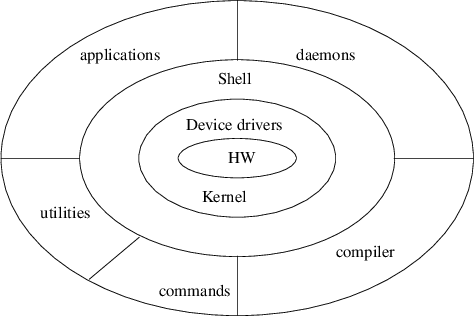

Index
1. Operating system components
-

- compiler
- gcc ,
g++ , gm2 ,
gjc and gpc
.
- utilities
- commands
- applications
- shells
-
bash , sh ,
csh , ksh
and tsch .
2. Further reading
- Mike Gancarz, ‘‘Linux
and the UNIX Philosophy’’, ISBN 1-55558-273-7,
2003
- Karl Fogel, ‘‘How to Run a Successful
Free Software Project’’, ISBN 0-596-10759-0,
2005
3. Modern Operating system requirements
- must exploit parallelism
- needs
to be extremely portable
4. Very Brief Implications UNIX History
- Ken Thompson of AT&T invented
UNIX in 1969 and it ran on a PDP-7
- UNIX was based on
Multics
- one motivation for writing UNIX
was to run a program called ‘‘space
travel’’
- Thompson borrowed ideas from
Multics
- Good programmers write great software; great
programmers ‘‘steal’’
-
notice how Thompson avoided the ‘‘not invented
here’’ syndrome
5. Very Brief Implications GNU/Linux History
- split into two sections
- the Linux kernel (which bridges the
hardware/software interface)
- and GNU utilities,
compilers, shells, daemons, applications
6. Very Brief Implications Linux History
7. GNU History
- the GNU project
started in 1984 to develop a complete UNIX
like operating system which is free software
- ‘‘free’’ as in
speech and but not as in beer
- Richard Stallman
started the GNU project and began work upon
gcc , emacs
and gdb .
- all GNU software is
licenced through the GPL
- in the early days the each
software component had to be complete written from scratch
- so that it could be completely owned
by the GNU foundation
- more recently, almost
nothing is written from scratch anymore
- as each new software component borrows
heavily from other GNU software components
8. GPL designed to uphold Free Software
- it provides
- the freedom to run
the program, for any purpose (freedom 0).
- the freedom
to study how the program works, and adapt it to your needs
(freedom 1)
- access to the source code
is a precondition for this.
- the freedom to
redistribute copies so you can help your neighbour (freedom
2)
- the freedom to improve the program, and release your
improvements to the public, so that the whole community
benefits (freedom 3)
- access to the
source code is a precondition for this.
9. Software engineering implications of GPL
- liberally encouraged to
‘‘borrow’’ code from other projects
- encouraged to re-factor borrowed code
if you extend a project (rather than to duplicate code with
minor variants)
- libraries are constructed at both
the source level and also at the object level
- tremendous productivity gain compared
to closed source development
- todays new GPL project can
become tomorrows library of source code
- software
engineers advocate code reuse - but often miss the most
important component
10. UNIX Philosophy in a nutshell
- small is beautiful
- small software programs are generally
fast
- they are often combined with other software
programs in useful ways (often unseen by original author)
- any advance in computer speed will have a noticeable
effect on a small program
- make each program do
one thing well
- removes extraneous
code, removes complexity and improves flexibility
-
build a prototype as soon as possible
- choose
portability over efficiency
- store data in flat text
files
- all configuration files are
plain text
- use software leverage to your
advantage
-
use shell scripts where possible
- try
to avoid writing an equivalent C program
- avoid
captive interfaces
- make every program a filter
11. UNIX and GNU/Linux culture/goals
- allow the user to tailor the
environment
- make operating system kernels small and
lightweight
- not always achieved but
certainly a goal
- see GNU Hurd
- use lowercase
and keep it short
- save trees
- silence is golden
- think parallel
- sum of the parts is greater than
the whole
- large applications are built
from smaller programs (eg shell scripts)
- look for
90% solution
- doing 90% of the solution
is much easier and will satisfy 90% of the user base
- worse is better
- inclusive and
least common denominator is likely to survive
- worse is
likely to be cheaper and thus more popular
- think
hierarchically
12. Software projects
- Fredrick Brookes in his land mark
book ‘‘Mythical Man-Month, The: Essays on
Software Engineering’’, Anniversary Edition,
2/E, ISBN: 0-201-83595-9, 1995
- defines
three systems of Man
- man builds the first system
with his back to the wall
- no time to
do it right
- built by a small number of people
-
fuelled by excitement
- first system is a
‘‘lean, mean computing machine’’
- second system of Man
- built
by so called experts
- built by much design and attention
- might capture the hearts and minds of millions of users
- experts sometimes exact revenge on the basic idea
and ‘‘improve’’ some of the basic
algorithms of the first system
- often
fall into the NIH syndrome
- second system designed
by a committee
- overweight software
which is slow
- does not yield huge benefits from
increases in compute power
- second system is a
success and failure
- extra features
which users might use
- big, slow and bug ridden
software
13. Third system of Man
- built by people who have been burned
by the second system
- it usually
involves a name change from the second system
- original
concept intact and is regarded as obvious
- third
system combines the best characteristics of the first and
second system
- the designers of the third system are
usually given time to do it right
14. GNU and Linux is both a third and second system
- GNU and Linux came along during
1984..1991 when UNIX went through a
tumultuous second system period
- UNIX was
of the 1980s was definitely a second system
- slow (applications rarely ran faster
than their 1970s counterparts..)
- bickering over
UNIX standards
- AT&T
- Sun
- Open Software Foundation (no relation to open
source - or GNU ..)
- people tired of bloat of
UNIX are happy with GNU/L inux
- best ideas of UNIX are found in
GNU/L inux
- much of the implementation is
written correctly
- developers have had
the time to write code correctly
- it also uses a
name change
15. GNU/Linux as a second system
- arguably it is using a second system
methodology
- namely OpenSource or Free
Software
- remember these generate much excitement
in some areas..
- but it is now becoming formalised by
many books
- many conferences,
symposiums, journals etc
16. Producing a successful free software project
- choose a good name
- have a clear
mission statement
- state that licence terms
unambiguously
- list the features and requirements
-
clearly state the development status
- provide easy
access to source code
- download a
tar.gz file using http or ftp
- allow the git repository
to be browsable
17. Release often/release early
- do not be afraid to release early
- do not be afraid to release often
- Eric Raymond in his landmark essay
The Cathedral and the Bazaar
cites Linus Torvalds as sometimes releasing two kernels a
day
18. Use software version control
- popular choices are git, svn
- concurrent version system
-
allows you to keep a project of many source files
- each modification can be
push ed to the
git repository
-
co-developers can obtain copies of the project at any time
in its life
- developers may
clone a complete git repository
- examine changes between software
revisions
Index
1. Operating system components
2. Further reading
3. Modern Operating system requirements
4. Very Brief Implications UNIX History
5. Very Brief Implications GNU/Linux History
6. Very Brief Implications Linux History
7. GNU History
8. GPL designed to uphold Free Software
9. Software engineering implications of GPL
10. UNIX Philosophy in a nutshell
11. UNIX and GNU/Linux culture/goals
12. Software projects
13. Third system of Man
14. GNU and Linux is both a third and second system
15. GNU/Linux as a second system
16. Producing a successful free software project
17. Release often/release early
18. Use software version control
Index
This document was produced using
groff-1.22.